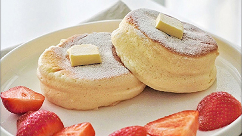

Kim's Simple Baking
Souffle Pancake
Tip: Do not open the lid too often during cooking, lower the heat and cook longer.
Ingredients

- Flour(All purpose) 2 tbsp
- Egg 50g
- Sugar 1.5 tbsp
- Milk 1 tbsp
- Vanilla Extract 1/2 tsp
- Lemon juice or Vinegar 3-4 drops
Directions
- Separate and whisk the egg white adding sugar until it turns like cloud.
- Combine egg yolk mixtures, egg white mixtures and flour using a flat spatula gently. (Do not use a whisk to mix.)
- Preheat the pan at 4/9 level for 1 minute, grease the pan.
- Scoop 2/3 of the batter into 2 pancakes.
- Add 2 tsp (room temperature) water, cover and cook 2 minutes.
- After 2 mins, scoop the rest of the batter into 2 pancakes.
Home |
Pound Cake |
Scone |
Cheese Cake |
Souffle Pancake
For more information check out YouTube Video